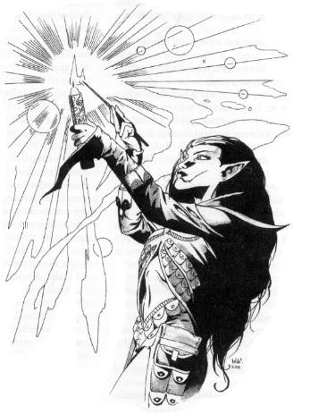

“让你的思维变得像一束简单却完美的火焰。”
火焰令一些人无比痴迷。简简单单地燃烧着，每支蜡烛都是一件艺术品，那些包裹住黑色烛芯的蜡既是基座又是燃料，在燃烧中化作烛焰的泪光缓缓滴下，显出一种令人向往的美丽。而很多秘密也可以被储存在这些蜡中：秘密……抑或是法术。
这些又被人称为"魔法蜡烛商人(spell chandlers)"的专家将大部分时间花费在制作雕琢蜡烛上，不仅是为了美观，也是为了力量。那些充盈在蜡烛中的法术在火焰点燃泪珠融化的同时就会被释放出来。并且这些法术可以被燃烧的火焰增强。操烛师掌握了一些捷径，他们的类专长能力可以增强储存在蜡烛中的法术的效果，因此他们很受那些认识到魔法消耗品在地城深处重要性的冒险团队的欢迎。NPC操烛师经常出现在那些出售魔法物品的地方，以和药水同等的价位贩售他们的无限制蜡烛（任何人都可以使用的蜡烛）。但是，点燃蜡烛显然不及喝下药剂来的便捷，而且蜡烛产生效果也要慢一些，所以这些无限制蜡烛也许很难像药剂受欢迎。

生命骰：d4
先决条件：要想成为一名操烛师，必须要达到以下这些标准。
手艺（制作蜡烛）：6
专长：强韧加强（Great Fortitude）
法术：能够施放三级或以上的法术
特殊：操烛师必须要保证至少100个火绒支的供应
本职技能：炼金术Alchemy(Int),专注Concentration(Con)，手艺Craft(Int)，知识Knowledge(Int)，专业Profession(Wis)，探知（专有）Scry(Int)，搜索Search(Int)，辨识法术Spellcraft(Int)
技能点：2+智力调整值
职业特性：
盔甲与武器擅长：无变化。
每日法术：每获得一个操烛师等级，他所获得的施法数量等同于他增加一个原本施法职业所获得的数量，但是不能获得其他的原有职业特性（如喝退/驱散不死生物，超魔或者物品制造技能，原有生命骰数等），仅仅是增加一个施法等级。如果该人物成为操烛师之前拥有多于一个的施法职业，他必须选择其中一个职业的施法等级以决定增加的法术数量。
雕饰蜡烛：
操烛师可以将法术储存在蜡烛里，每支蜡烛储存一个法术。实际上是操烛师获得了一个使用特殊介质的抄录卷轴技能。所有的规则，XP消耗以及价格适用于抄录卷轴的都同等于雕饰蜡烛。一支蜡烛一般能照亮5英尺范围持续1小时，但是一个雕饰过的蜡烛的持续燃烧时间如下面所提到的。只有使用者令其熄灭，否则一支燃烧着的蜡烛是不会熄灭的（驱散魔法依然会像对其他魔法物品一样抑制其效果）。要激活一个储存的法术，操烛师必须达到和使用一个同样法术的卷轴同样的要求。储存的法术必须是使用者能够施放的并且在其已知法术列表上（比如，智力15的法师可以施放5级的法术）。然后她必须做一个施法者等级鉴定(DC=蜡烛的使用者等级+1)通过才能施法。如果检定失败，必须作感知检定(DC=5)以避免严重失误（见城主指南中文228页）。
辨识蜡烛：若要激活一个准备好的蜡烛，使用者需要先辨识它，这需要一个法术辨识检定DC=15+法术等级。（如果是制造者本人使用，就不需这一步）。
点燃蜡烛：点燃蜡烛最好用火绒支(tindertwig)。这是一个标准动作，可以像施放法术一样被打断。另外慢一些的方法是打火石和火绒或者透镜之类的物品，在最好的条件下这也是一个整轮动作了，通常会引发ao。使用者也可以做一个专注检定(DC=15)来尝试作防御式点燃。这可以不引发ao，但是如果未通过，则没有点燃蜡烛。当然你可以承受ao然后作专注检定(DC=10+伤害点数)，通过则依然能点燃蜡烛。
蜡烛的效果：一个成功的点燃的蜡烛自动在使用者的下一轮开始时激活储存的法术（不会引发ao），就像用一般方法准备并且施放法术一样，但是从她点燃蜡烛起，在法术持续时间内，她便不能作其他普通的动作了。蜡烛的火焰和该法术持续时间有关，比如一个瞬时的法术在瞬间闪光之后就烧完了，而一个较长时间的法术蜡烛燃烧的时间和法术持续时间相等。当然，如果火焰在法术结束前被熄灭
，那么法术持续时间就算是被人为减少了。
延时蜡烛：
在第二级，操烛师可以加长蜡烛中储存法术的持续时间，实际上相当于获得了法术延时的超魔专长，但仅仅局限于雕饰蜡烛的时候，所有适用于法术延时的规则都适用于延时蜡烛，被储存的法术算作高一级的法术。
无限制蜡烛：
在第三级，操烛师学会如何制作给一般人使用的蜡烛。实际上相当于获得一个适用特殊介质的调制药水专长。所有规则，XP消耗和价格适用于调制药水的都是用于无限制蜡烛。像一般药剂一样，只有3级或以下的法术才能被储存在蜡烛中。任何用上面提到的方法点燃蜡烛的生物，在该生物的下一轮开始即成为储存法术的目标。其他方面，无限制蜡烛和一般雕饰蜡烛没有区别。
增远蜡烛：
在第四级，操烛师使储存法术的施法距离加倍。实际上相当于获得了法术增远专长，但仅仅局限于雕饰蜡烛的时候。所有适用于法术增远的规则都适用于增远蜡烛，被储存的法术算作高一级的法术。
双效蜡烛：
第五级时，操烛师精炼了她的能力，可以在同一支蜡烛上储存两个法术。她必须单独雕饰每一个法术，支付两个法术所需的XP 和gp的总和，且必须确定出发的顺序。第一个法术在点燃时像普通的单法术蜡烛一样被触发；在第一个法术效果结束后第二个法术自动触发。如果第二个法术需要指定目标，只要使用者在蜡烛的20英尺范围内，她便只需在此法术被激活时像施放该法术一样指定目标即可。否则蜡烛本身便是默认的法术作用中心。两种法术需以不同颜色的蜡加以区别，比如上半部是黄的，下半部是蓝的。
强效蜡烛：
第六级时，操烛师可将储存的法术中所有可变数值增加1/2，实际上相当于获得了法术强效专长，但仅仅局限于雕饰蜡烛的时候。所有适用于法术强效的规则都适用于强效蜡烛，被储存的法术算作高二级的法术。
快速发光：
在第七级，操烛师学会如何更快的激活蜡烛。点燃蜡烛并不会减少任何时间，但是储存的法术可以在点燃的同时产生效果（而不是在使用者下一轮开始时）。
升阶蜡烛：
当操烛师达到了八级，她可以提升储存法术的实际等级。实际上相当于获得了法术升阶专长，但仅仅局限于雕饰蜡烛的时候。所有适用于法术升阶的规则都适用于升阶蜡烛。
条纹蜡烛：
第九级时，操烛师可以在同一支蜡烛上更好的储存两个法术。她必须单独雕饰每一个法术，支付两个法术所需的XP 和gp的总和。当蜡烛被点燃师，两个储存在蜡烛中的法术被同时触发，如果法术需要指定目标，只要使用者在蜡烛的20英尺范围内，她便只需在此法术被激活时像施放该法术一样指定目标即可。否则蜡烛本身便是默认的法术作用中心。两种法术需以不同颜色的蜡加以区别。
极效蜡烛：
第十级时，操烛师可将储存的法术中所有可变数值增加到最大，实际上相当于获得了法术极效专长，但仅仅局限于雕饰蜡烛的时候。所有适用于法术极效的规则都适用于极效蜡烛，被储存的法术算作高三级的法术。
Class Attack Fort Ref Will Special
Level Bonus Save Save Save
1st +0 +0 +0 +2 雕饰蜡烛（Scribe candle）
2nd +1 +0 +0 +3 延时蜡烛（Extend candle）
3rd +1 +1 +1 +3 无限制蜡烛（unfettered candle）
4th +2 +1 +1 +4 增远蜡烛（Enlarge candle）
5th +2 +1 +1 +4 双效蜡烛（Dipped candle）
6th +3 +2 +2 +5 强效蜡烛（Empower candle）
7th +3 +2 +2 +5 快速发光（Quick light）
8th +4 +2 +2 +6 升阶蜡烛（Heighten candle）
9th +4 +3 +3 +6 条纹蜡烛（Striped candle）
10th +5 +3 +3 +7 极效蜡烛（Maximize candle）
spells per day
+1 existing class/class